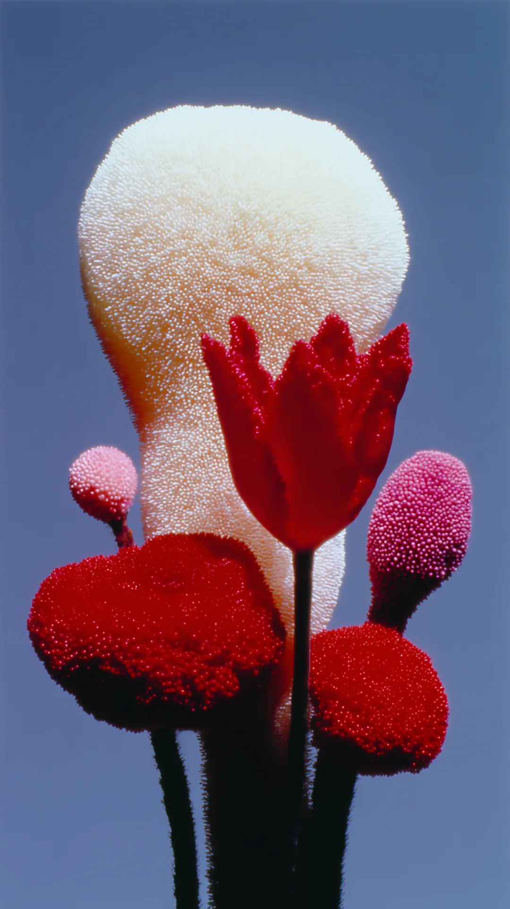
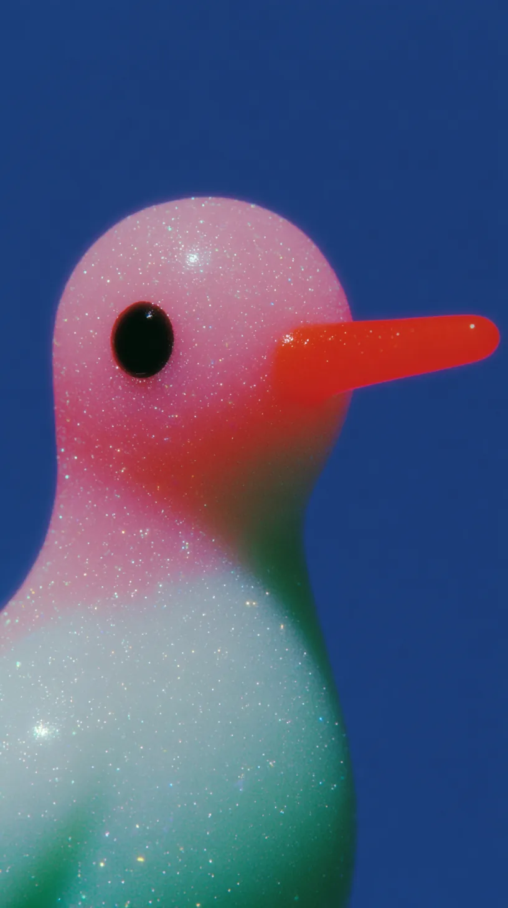
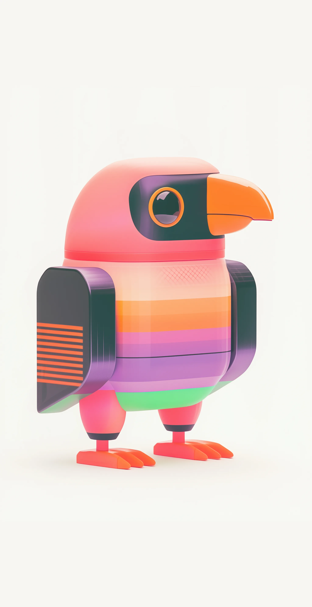
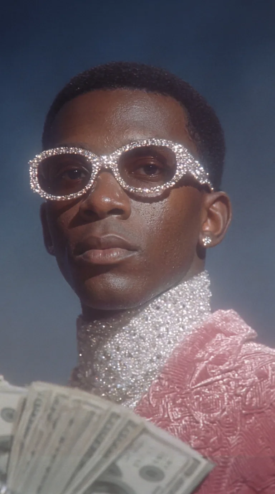
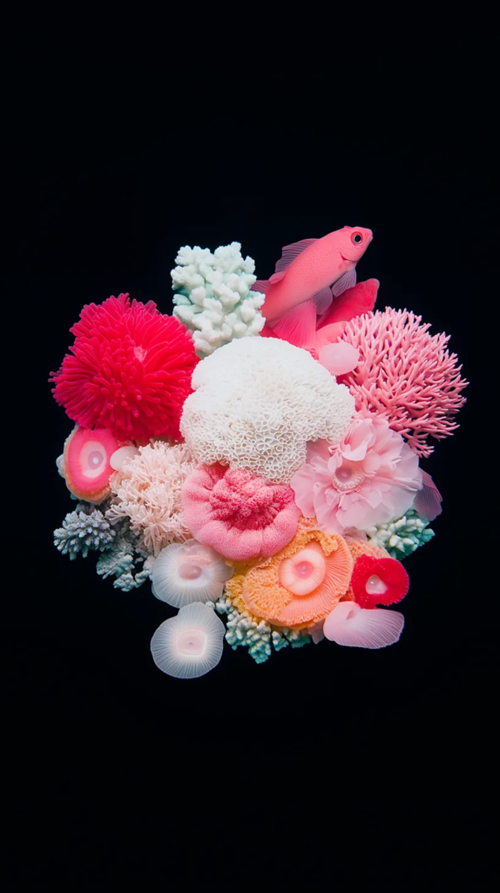
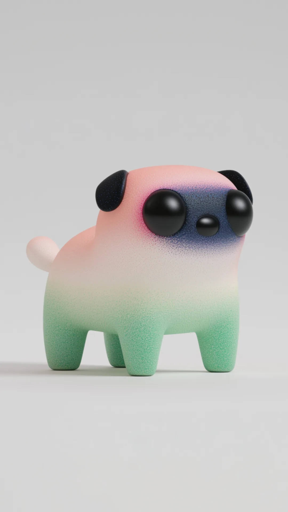

To craft the right visual world for a project, I explore diverse styles, some entirely unexpected. Even using artificial tools, I shape imagery and video to evoke a natural, tactile feel and genuine emotion.





